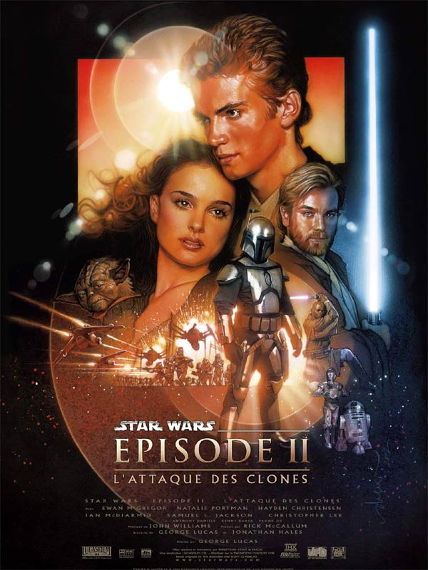

Episodes
Episode i:la Menace Fantome
Episode ii:L'ataque des Clones
Episode iii:La revanche des Siths
Personages
Anakin Skywalker
obi Wan kenobi
Padme Amidala
vaisseaux
Croiseur Interstelaire
Chasseur jedi
Canonière Clone
Connexion
/
inscritption

Padmé Amidala
obi Wan Kenobi
Anakin Skywalker